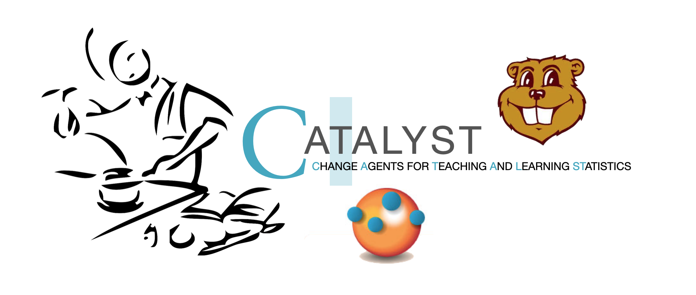

Statistical Thinking
A Simulation Approach to Modeling Uncertainty
Front Matter
This website is intended to serve as an organizational hub for the most current version of the CATALST Project’s Statistical Thinking: A Simulation Approach to Modeling Uncertainty. Here you will be able to access materials such as readings, data sets, and the lab manual. The website also includes helpful links and resources for each of the course topics.
The resources that accompany this website include:
- A lab manual PDF copy available here
- Data sets used in the lab manual:
You can read more about these resources in the introduction.
Licensing and Attribution
Copyright © 2025 Catalysts for Change
PUBLISHED BY CATALYST PRESS

This work is licensed under a Creative Commons Attribution 4.0 International License. You are free to share, remix, and make commercial use of the work under the condition that you provide proper attribution. To reference this work, use:
- Zieffler, A., & Catalysts for Change. (2025). Statistical Thinking: A simulation approach to uncertainty (4.5th ed.). Minneapolis, MN: Catalyst Press. http://zief0002.github.io/statistical-thinking/
The work to create the material appearing in the book was made possible by the National Science Foundation (DUE–0814433).
The material on this website and in the lab manual is a direct reflection of the ideas, work, and effort of several Catalysts for Change. They include (alphabetically): Ethan Brown, Jonathan Brown, Dan Butler, Tony Casci, Beth Chance, George Cobb, Robert delMas, Katherine Edwards, Michelle Everson, Jeffrey Finholm, Chris Fiscus, Elizabeth Fry, Joan Garfield, Theresa Gieschen, Meg Goerdt, Robert Gould, Adam Gust, Melissa Hanson, John Holcomb, Michael Huberty, Rebekah Isaak, Kari Johnson, Nicola Justice, Laura Le, Chelsey Legacy, Regina Lisinker, Suzanne Loch, Matthew Mullenbach, Michael Nguyen, Amy Okan, Vimal Rao, Allan Rossman, Anelise Sabbag, Andrew Zieffler, and Laura Ziegler.
Additionally, some of the activities presented in the lab manual were originally developed by Beth Chance, George Cobb, John Holcomb, and Allan Rossman as part of their NSF-funded project Concepts of Statistical Inference: A Randomization-Based Curriculum (NSF CCLI- DUE-0633349).
Colophon
The book is typeset using Atkinson Hyperlegible. The color palette was generated using coolors.co.
Icons used on the website are:
- Key by Iconic from the Noun Project